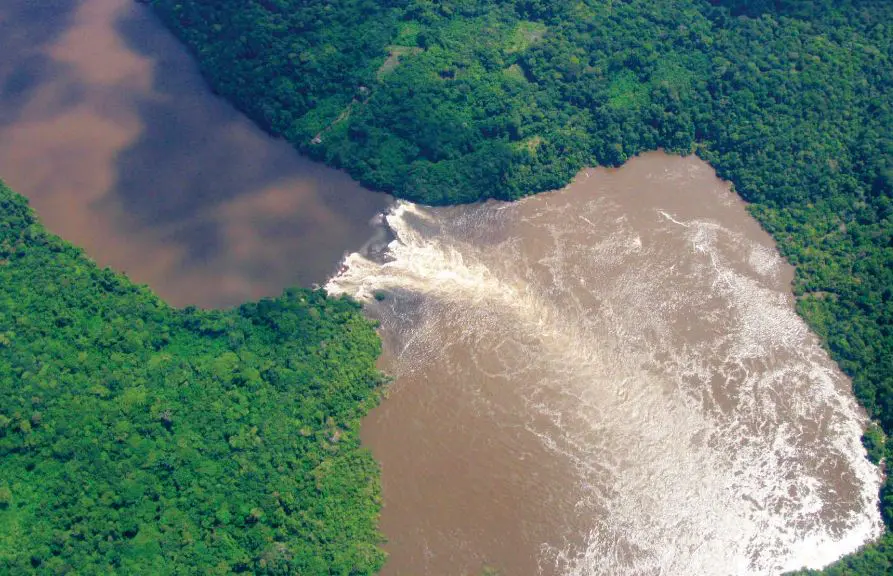

El río Amazonas atraviesa Perú (nacimiento), Colombia y Brasil (desembocadura). Es el río más largo y caudaloso del mundo.

El río Apaporis.
Leticia está construida sobre la márgen izquierda del río Amazonas. Su condición de ciudad limítrofe le da características especiales, a las que se suman las de una calidad fluvial que tiene un comercio especial. Leticia goza de un intenso comercio con los países vecinos, especialmente Brasil. Su comunicación con el interior del país es aérea, la ciudad dispone de una adecuada infraestructura oficial y comercial.
Biodiversidad del Amazonas.
Superficie-bioma-amazonico.
Extensión del Amazonas.
Esta ciudad que está en unas de las margenes del Río Amazonas, también cuenta con los ríos Apaporis que en su recorrido recoge las aguas de los ríos Yapuyaca, Popayaca y río Caqueta.
El río Amazonas atraviesa Perú (nacimiento), Colombia y Brasil (desembocadura). Es el río más largo y caudaloso del mundo.
El río Apaporis.
Un 20 % de las especies mundiales de plantas se halla en la selva amazónica. En las lagunas a lo largo del río Amazonas florece la planta Victoria amazónica, cuyas hojas circulares alcanzan más de cuatro metros de diámetro. Está constituido por los bosques donde se encuentran una cantidad increíble de árboles de todo tipo: itahuba, caricari, tajibos, cedro, ruta barcina, mandrilo y otros. El 50 % de las especies de madera son exóticas.
La heliconia es una de las flores más características, representativas y llamativas de toda la región del Amazonas.
Victoria Regia planta nativa de las aguas poco profundas de la cuenca del Amazonas.
Entre los mamíferos, el Amazonas posee enorme cantidad de especies, como los monos, el jaguar, el puma, el tapir y los ciervos. En sus aguas viven dos especies de delfines, como el delfín rosado. Se encuentran reptiles con gran cantidad de especies de tortugas acuáticas y terrestres, caimanes, cocodrilos, y multitud de serpientes, entre ellas la anaconda. No hay otro ecosistema en el mundo con tanta cantidad de especies de aves; entre estas destacan los guacamayos, tucanes, las grandes águilas como el águila arpía, y otras muchas especies, en general de coloridos plumajes. Un 20 % de las especies mundiales de aves se hallan en la selva amazónica. Para los aficionados al acuarismo, se trata de una fuente que provee la mayor cantidad de especies piscícolas que hoy en día pueblan los comercios y acuarios del planeta.
Jaguar.
Delfin rosado.